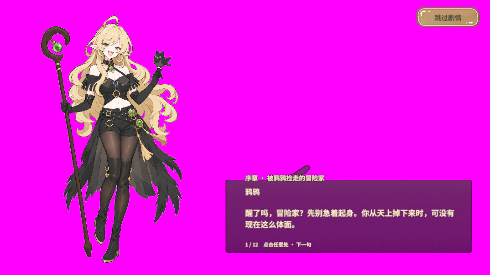
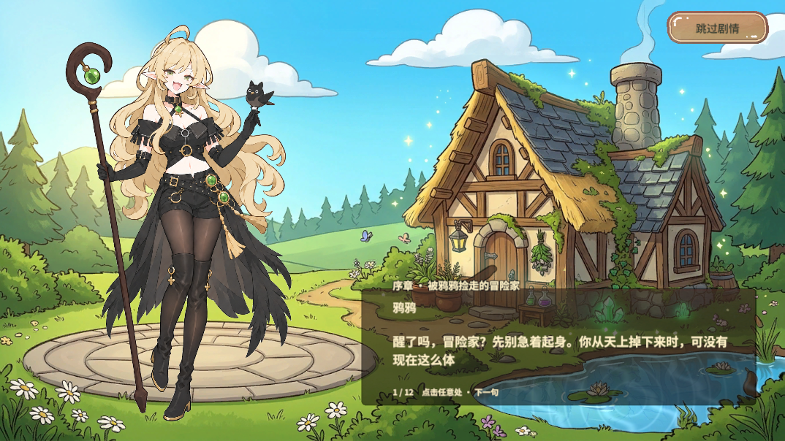

为什么容易误判
当时 Unity 2022.3.15f1c1 的活动构建目标是 Android，编辑器渲染实际使用 Direct3D 11，UseABInEditor 已开启。Android 构建目标会让编辑器编译出 UNITY_ANDROID，这个宏同时存在于桌面编辑器进程里。只看构建目标或材质上显示的 Shader 名称，会漏掉实际使用的图形 API 和 AB 来源。
旧版 RevABLoader.MainName 先按平台宏选包，因而选择 StreamingAssets/Android。序章仍能取得名为 RevGame/Background/LobbyMagicCottage 的 Shader 对象，但其 Android 编译变体无法为当前 D3D11 渲染提供兼容程序，背景纹理绑定断言为 false，画面落到亮粉错误表现。Shader.name、资源加载成功以及 Console 安静都不足以证明材质画对了。Unity Shader 加载说明
修复与实测
在 Revolution 源仓库让 UNITY_EDITOR 优先选 PC 主包，重新导出并同步到 RevGame。正式 Player 继续走各平台的主包分支。这次在同一台机器、同一 Android 构建目标、同一真实 AB 模式下，用仓库已有的 PC AB 复测。
| 检查 | 修复前 | 修复后 |
|---|
| 序章背景 | 亮粉覆盖大部分画面 | 小屋背景恢复 |
| 截图亮粉像素占比 | 72.42% | 0.00% |
| 背景纹理绑定 | false | true |
| Shader 支持 | 当时未单独采集 | backgroundShaderSupported=true |
亮粉占比只用于对照这两张截图。验收覆盖 Windows Editor 序章的冷加载，Android 真机的 Shader 和贴图兼容性需要单独验收。

修复前 · 粉色背景

修复后 · 小屋背景恢复
原始验收记录 · 框架修复 · RevGame 同步
下次排查顺序
- 先记录活动 Build Target、Editor 实际图形 API、直读或 AB 模式，以及主包来源。Windows Editor 使用真实 AB 时，检查 PC 主包、共享 Shader 包和依赖是否来自同一套构建。
- 定位受影响的实际材质、
Shader.isSupported、采样纹理、UV 与画面。若直读正常而 AB 粉屏，优先检查包的平台、版本、依赖和 Shader 变体。若两种模式都异常，再看源 Shader 编译与渲染配置。
- 若框架误选平台，修框架源码并同步快照。资源链继续通过项目既有分包和加载入口验证。切回直读只能作为定位对照。
- 保持原出错条件，从
StartScene 冷启动。普通 Editor Play 现在直进大厅。复测序章时，用 RevMCP 发现并显式调用 game.story.test-arm（flags=0），或在大厅用 story.preview。等待 story.state 就绪，再用 story.yaya-state 核对 Shader、纹理绑定和截图。结束后退出 Play，解除隔离并检查新增 Console 错误。